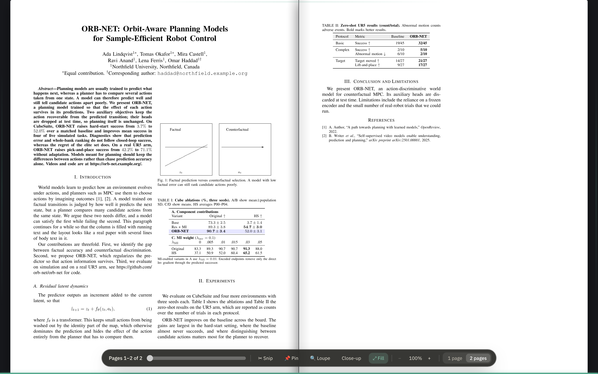
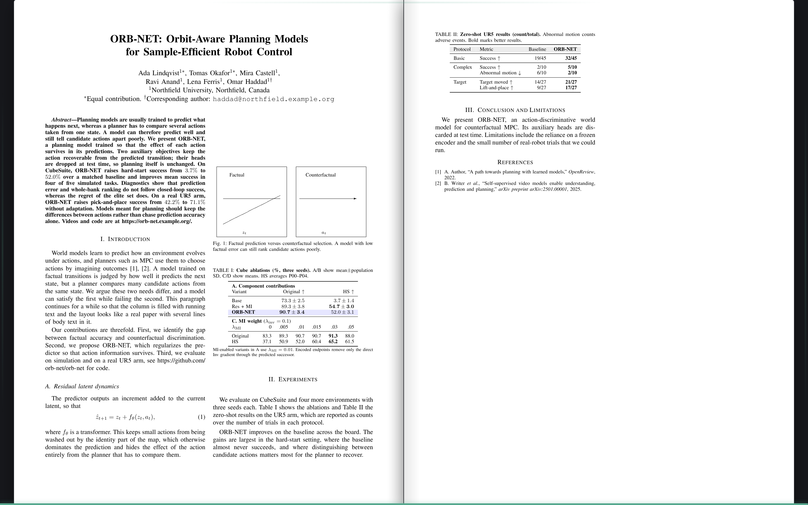
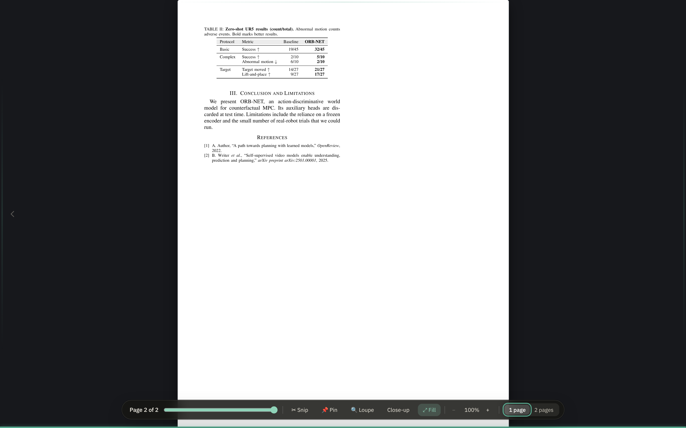

Reader · design mock-ups
The dock, under a filled spread
⤢ Fill gives a PDF's pages the whole frame. The page bar was then a muted bar half under the bottom edge, there only with the pointer on the last pixels of the screen — hard to see at all. It is now a dock: a dark frosted lozenge floating over the foot of the pages, out while the pointer moves, gone while you read, with a hairline along the bottom edge that stays.
These are photographs of the app, taken by its smoke test on a two-column paper in the dark theme. The design note is in the reader's repository under docs/fill-dock.md.

A lozenge over the pages, not a bar under them
The same dark lozenge the loupe and the close-up say their keys in, so it reads on a white page and in the dark alike. Everything the bar had is on it, in four groups: the folio and the slider; the tools; the zoom; one page or two. A pressed tool is the lozenge's green.

Gone while you read
Still for a couple of seconds, the dock goes, and nothing is over the pages. What stays is a hairline along the bottom edge, the accent colour as far as the spread is through the paper. A move of the pointer, or a tap on a touch screen, brings the dock back; it stays while the pointer or the focus is on it, so a slider being dragged never has it go from under it.

Out for a moment when a page turns
Turn a page with the arrow keys and the dock comes out with the new folio on it, then goes again, so you see where you are without reaching for anything.